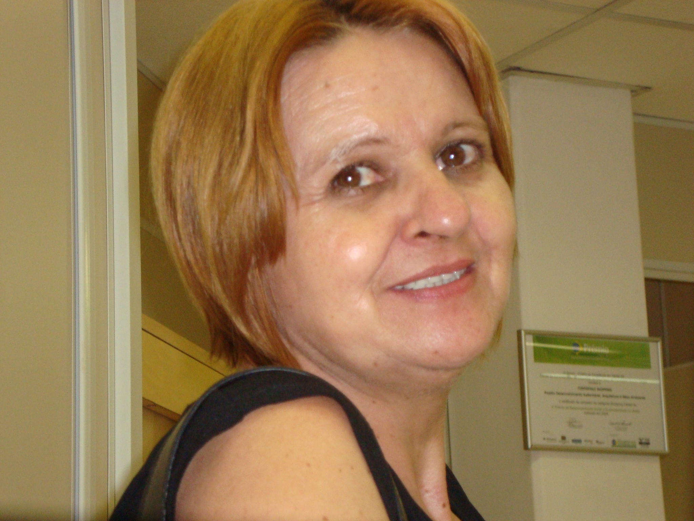
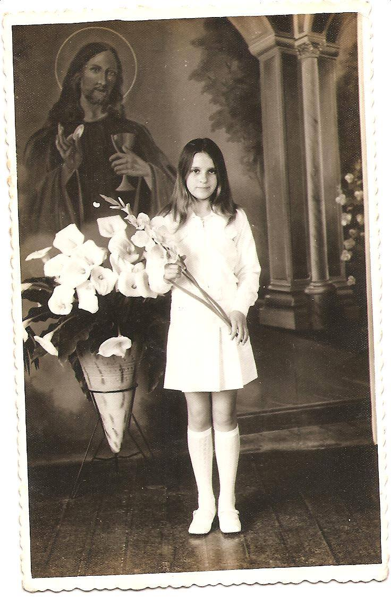
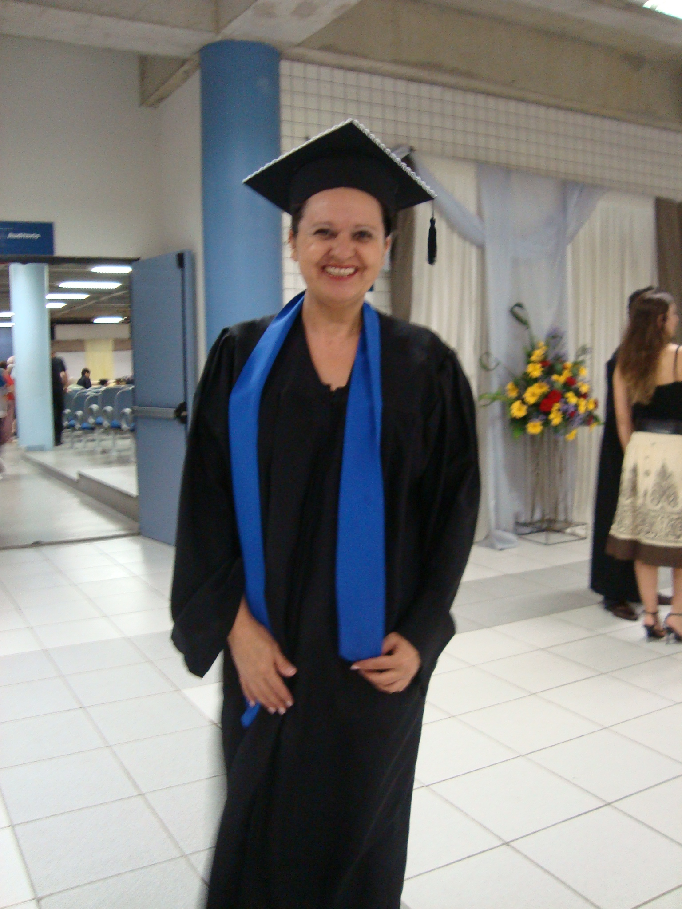
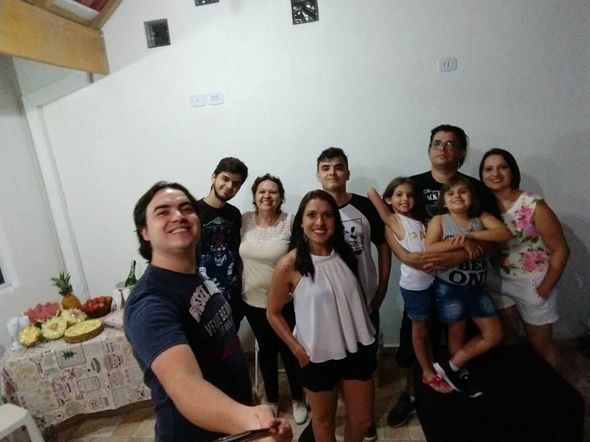
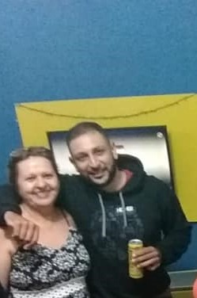
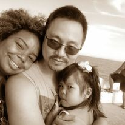

Elair Erzinger, nasceu em Mafra - SC em 1960, foi a primeira pessoa da família que era meio que uma rebelde sem causa e resolveu que queria fazer diferente...
Seu pai Ervino era construtor depois foi borracheiro. Sua mãe Izolina era costureira, e pouco paciente com as maluquices da sua filha rsrs.
Ervino criava seus filhos, mulher era educada para casar e ter filhos e ficar em casa, homem podia fazer tudo o que quizesse. Izolina foi mãe solo pois seu marido trabalhava em outra cidade. Acreditava como o marido que mulher tinha que se comportar.
Elair uma das filhas era fascinada pela leitura e achava que podia fazer de tudo, sempre queria aprender e ser livre. (para desespero de sua mãe). Desde pequena queria ter a liberdade iguais os meninos, Sua mãe a repreendia e achava que Elair era desobediente e a reprimia. Elair queria aprender mais. Seu pai era da opinião que homem tinha que aprender mais, menina não precisa estudar porque era educada para casar. Seu pai faleceu quando ela tinha 10 anos. Então, Elair implorou para sua mãe deixa-la estudar e foi cursar o ginásio.
Aos 10 anos foi trabalhar de babá para ter seu dinheiro e independência rsrs, depois trabalhou em um fabrica de fazer coturno como costureira, depois de vendedora em uma farmácia, como vendedora em uma loja de roupas. Terminou o ginásio. Mudou-se para Curitiba - Pr com sua mãe e irmãos, foi trabalhar de costureira e cursou datilografia, de férias foi para a casa do seu irmão, em Jacupiranga - SP, Foi com sua cunhada na casa de um Escrivão e em conversa conseguiu emprego no Forum da cidade. Voltou para Curitiba para convencer sua mãe que queria sair de casa e morar em uma pensão. Como sua mãe não deixava, entrou em acordo iria morar com seu irmão, mas pagaria pensão.
Elair gostava de sair, se divertir, viajar, foi emancipada pelo Juiz, pois para viajar sempre precisava de autorização.
Enquanto trabalhava no forum, conheceu o Antonio Paulo, com o qual se casou, ele não queria que ela trabalhasse e então mudou de cidade para Sete Barras - SP.
Por causa do trabalho do marido mudaram-se para Registro - SP teve a primeira filha Vanessa e ficou em casa, tentou voltar a estudar mas o marido não gostou da idéia e reclamava muito então parrou novamente..
Enquanto estava grávida da segunda filha Michele, mudaram-se para São Bernardo do Campos - SP, onde ele viajava muito e ela ficava com as filhas sozinha, então mudaram-se de novo para São José dos Campos - SP, onde teve seu terceiro filho Jean Paulo.
Elair então resolveu que voltaria a estudar, mesmo contra a vontade do marido e assim aos 30 anos foi terminar o segundo grau. Antonio então saiu para trabalhar e não voltou mais, a deixando com os 3 filhos pequenos em uma cidade que ela não conhecia nem o bairro onde morava, mas ela continuou estudando e trabalhando de salgadeira com um grande amigo Sr. Futozi, terminou o segundo grau e conseguiu emprego em uma Comercial Exportadora e Importadora. Foi fazendo todos os cursos nesta area que conseguia fazer para aprender sempre mais.
Deixou seus estudos de lado e trabalhou para criar os filhos, ficando sozinha com eles, ficaram mais unidos. Elair sempre incentivou os filhos a ir atrás dos seus sonhos, mas sempre pediu para que eles estudassem.
Aos 47 anos foi fazer faculdade de gestão financeira, trabalhou por mais de 20 anos na empresa, na area de Comércio Exterior, Financeiro e Contabilidade, SIPA e de Auditora Interna da Qualidade NBR ISO.
Depois de sair da empresa, resolveu aos 60 anos, mas com uma cabeça muito jovem, descobrir o que seu filho Jean Paulo e de seus netos Gabriel e Henrique gostam tando de programação.
Começou fazendo um cursinho básico de HTML e CSS na web online e acabou se apaixonando pela programação, continuou fazendo cursos,mas já está em seus planos fazer uma faculdade na area e trabalhar com programação.
Elair sempre fez tudo para que sua família fosse unída e que se ajudassem e apoiassem uns aos outros, tem seus filhos de coração que agregou a sua família. Conheçam as pessoas especiais na vida de Elair.
  